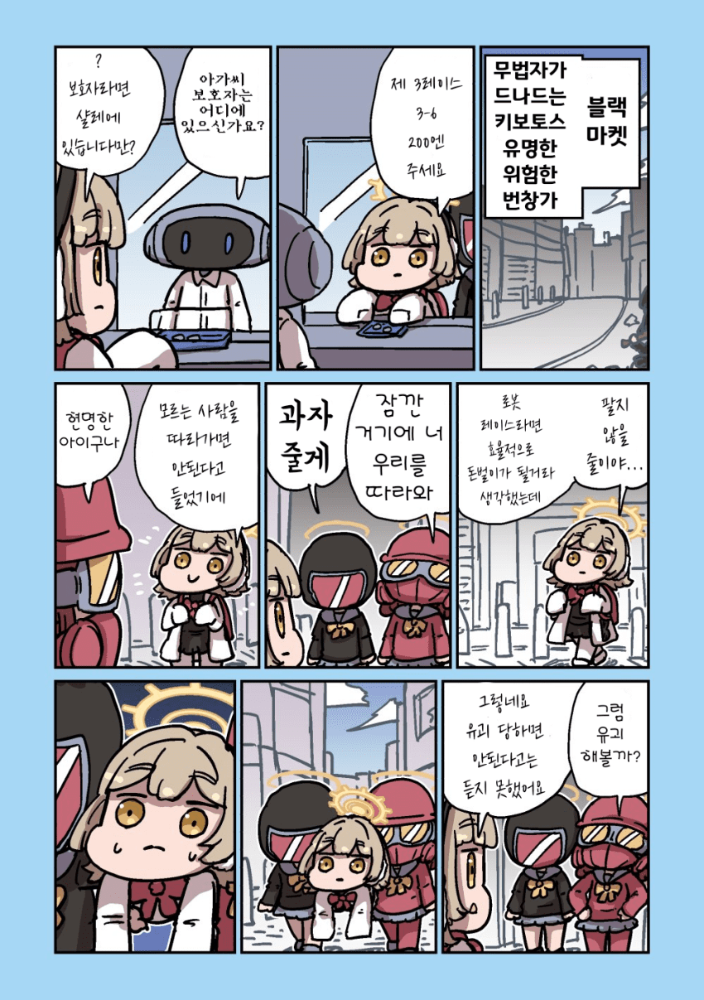
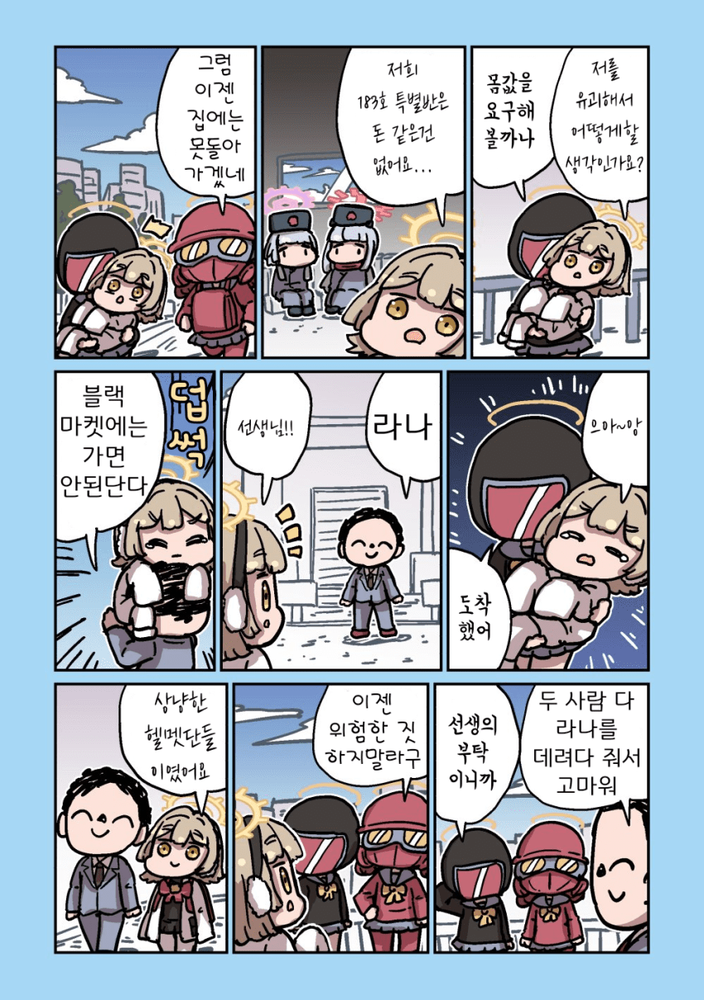
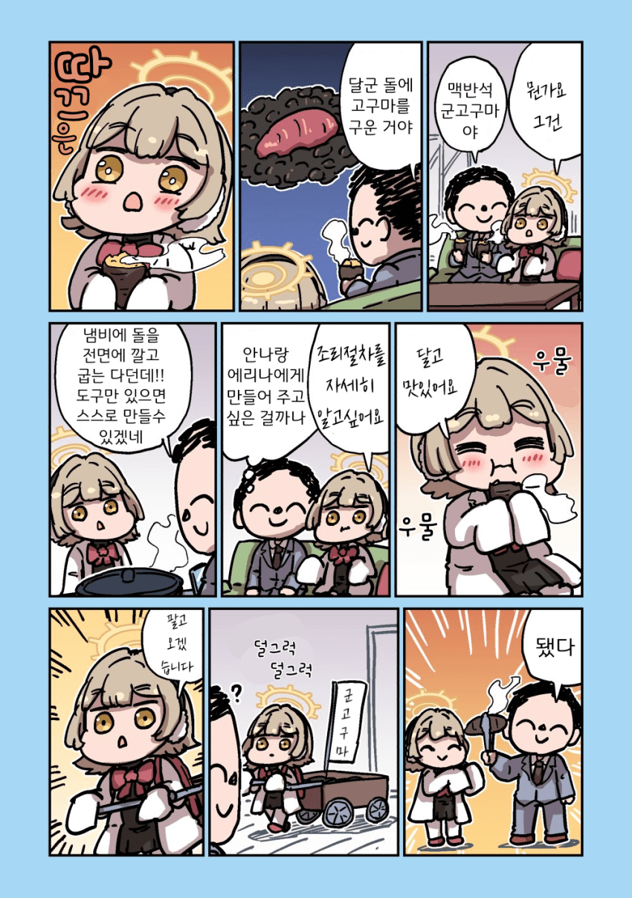
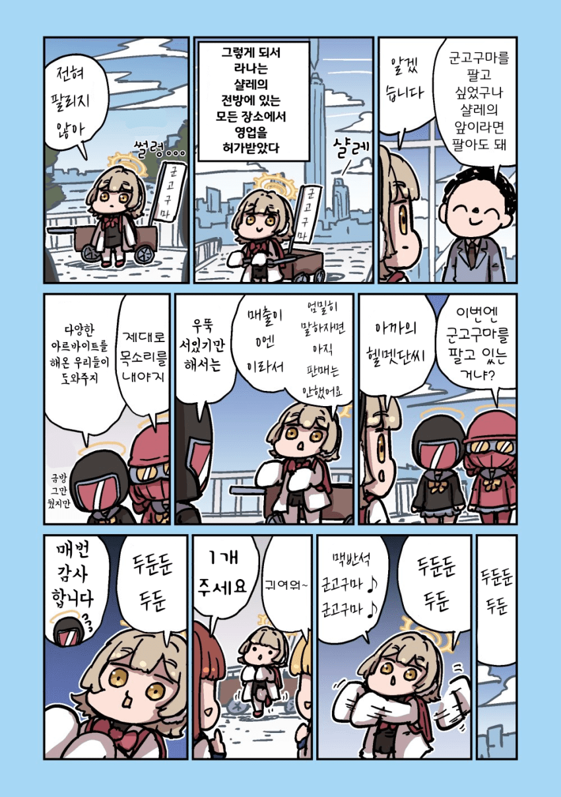
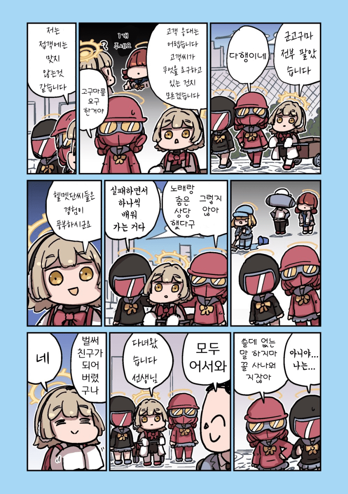
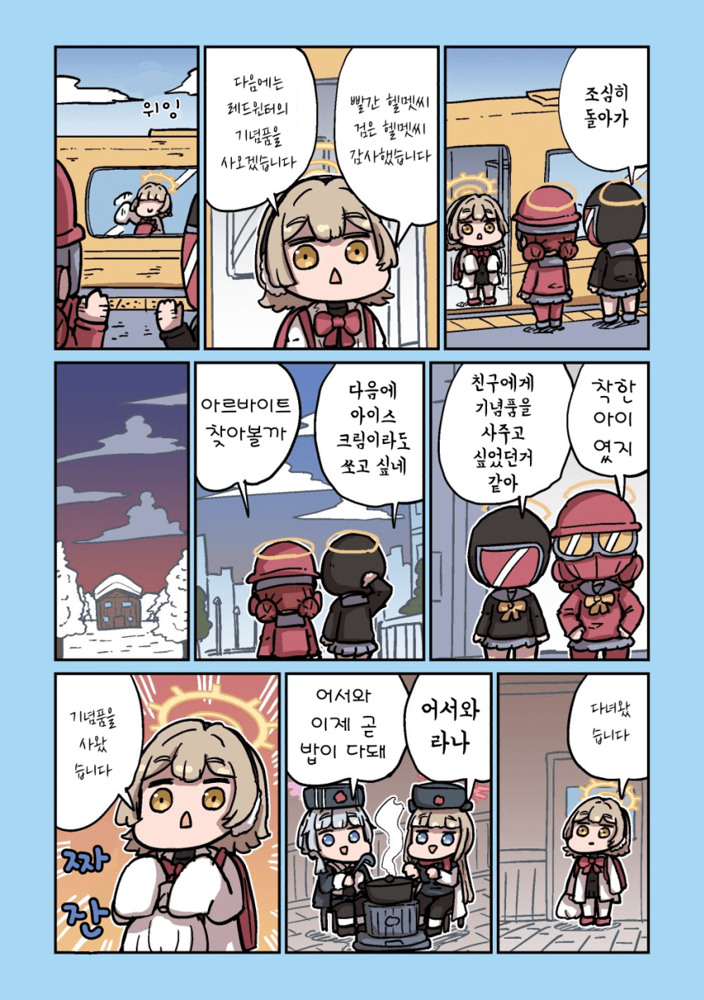
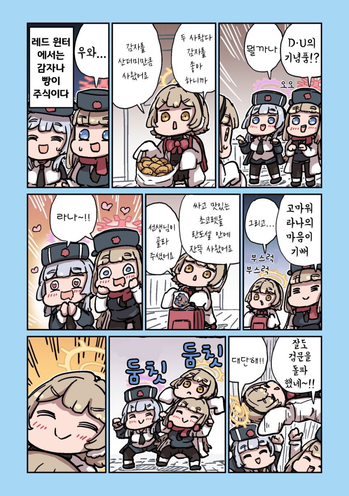
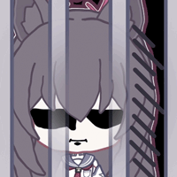

라나는 제 아내입니다
쟤 월반해서 11살인가 그럼
그러니깐 아내라는 거 아닐까



11살 개붕이
올해 몰루에서 제일 웃겼던게 쟤 별명이 발년이 된거였어
둠칫둠칫ㅋㅋㅋㅋㅋㅋㅋㅋㅋㅋㅋ
3단 둠칫은 첨보네
이 작가 만화는 참 볼때마다 마음 따듯해짐
처먹게나
둠칫둠칫
역시 이작가는 둠칫둠칫이야 ㅋㅋㅋㅋㅋㅋ
잔잔하게 훈훈하니까 기분좋네
귀여워ㅋㅋㅋㅋ
쟤낸 초콜릿 못먹나?
그런 맛있는건 아무튼 위대한 이름은 몽땅 달고 있는 체리노 위원장 동지 앞으로 가는게 당연하잖아
아 러샤느낌 난다 했더니 그쪽 학생이군
귀여워
귀여워
둠칫 간만에 나오는거 같네
둠칫둠칫
둠칫 둠칫!
둠칫둠칫 ㄱㅇㅇ
둠칫둠칫
지구는 둥그니까 온 세상이 샬레의 앞이다